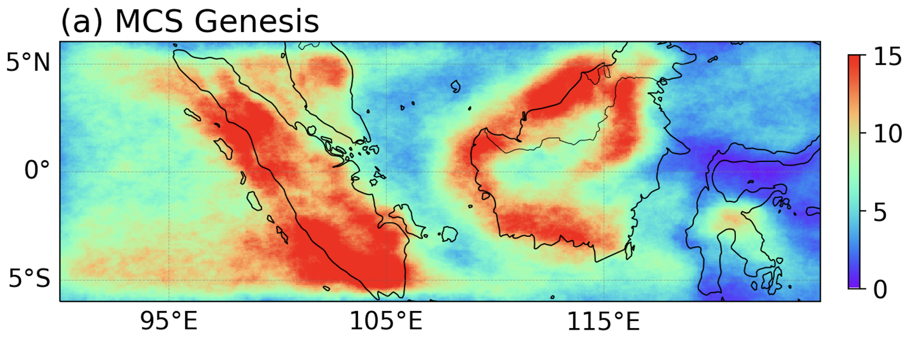
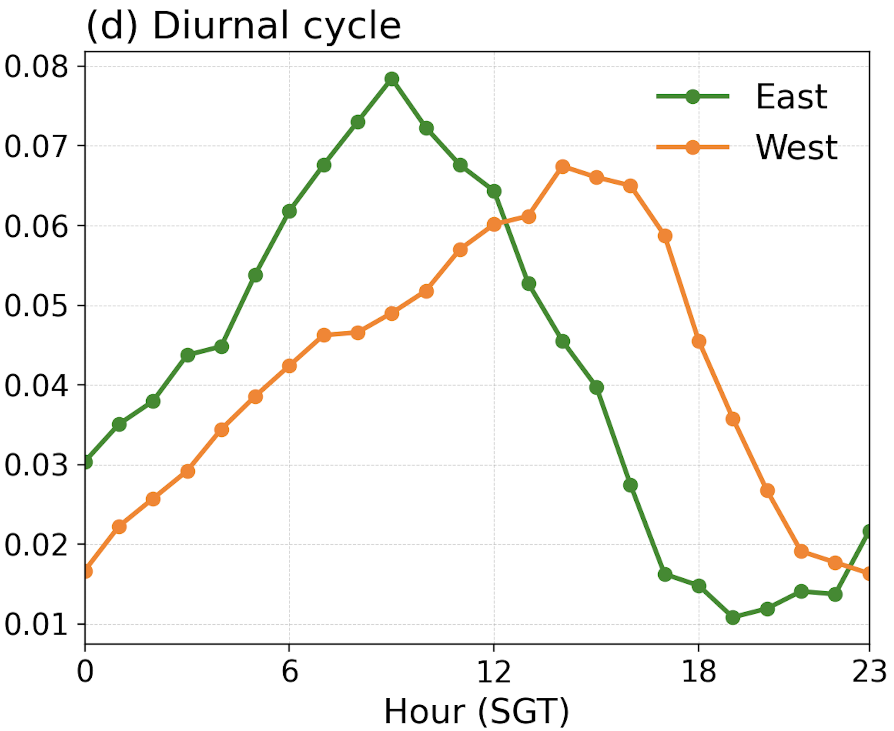
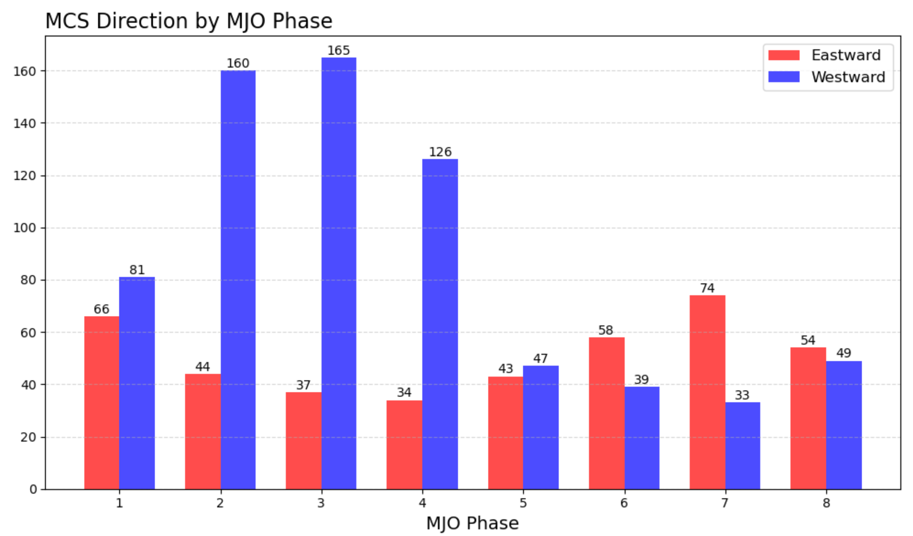
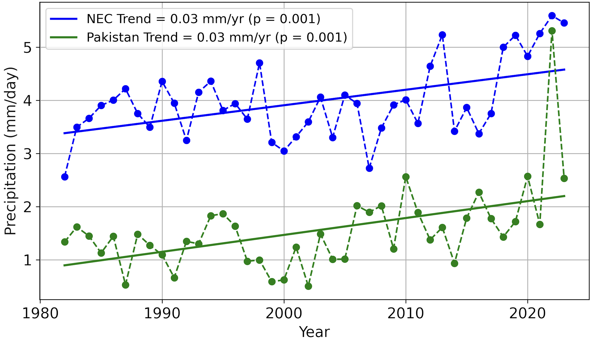
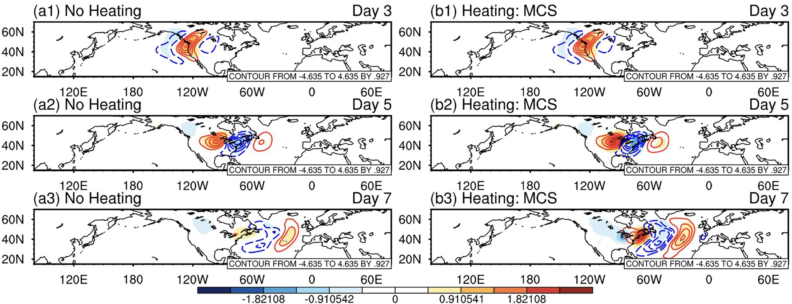
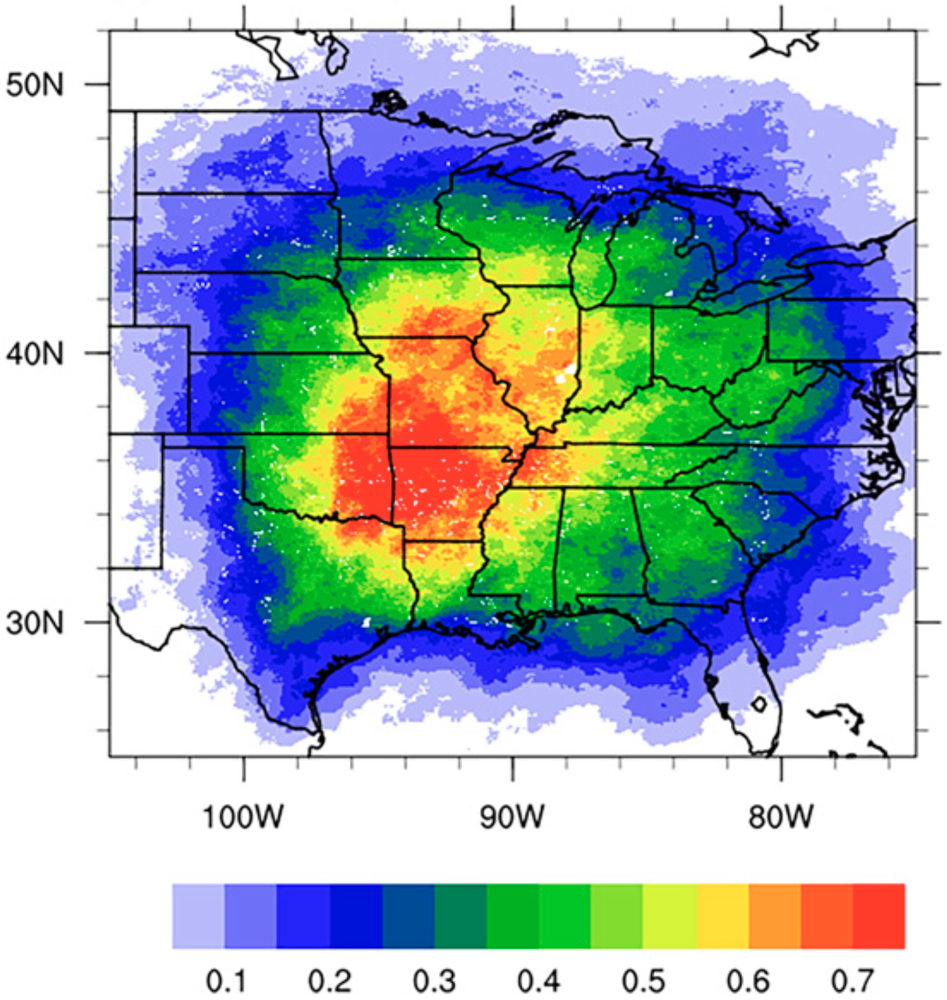
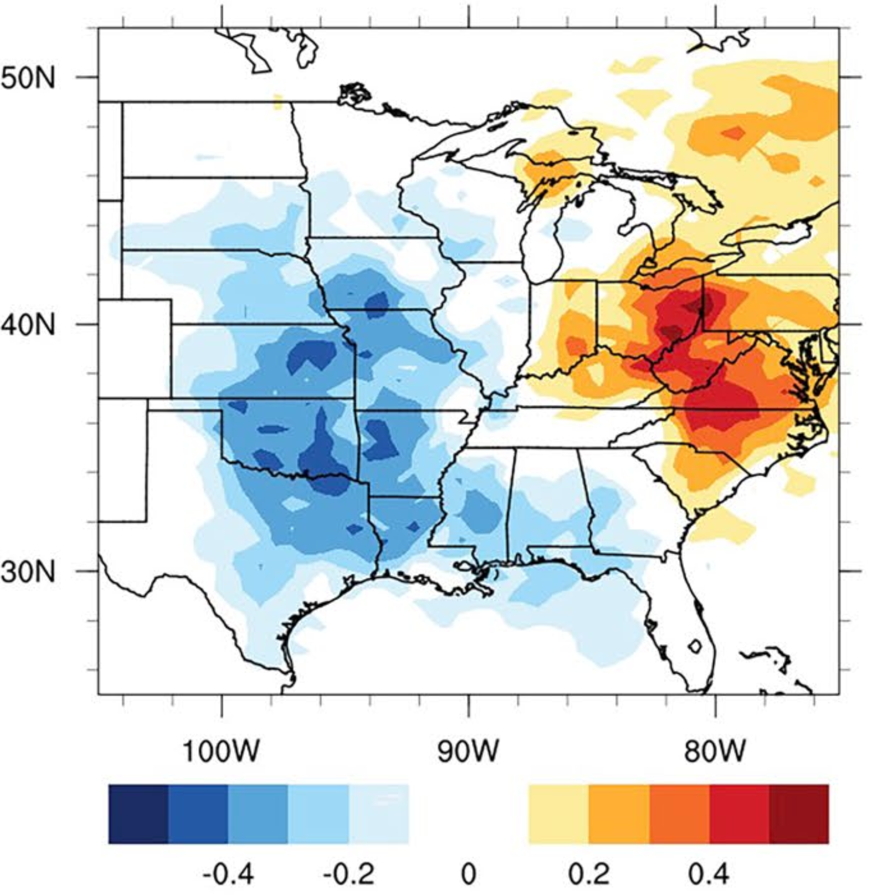

Research
Mesoscale convective systems over the Maritime Continent






Rainfall in the tropics often exhibits a pronounced diurnal cycle. Over the Maritime Continent, land-sea contrasts contribute to strong daily variations in convection and rainfall. At the same time, organized mesoscale convective systems (MCSs) account for a substantial portion of tropical rainfall. What are the roles of these systems in the diurnal rainfall cycle over the Maritime Continent?
We show that the diurnal cycle depends on the propagation of MCSs, with their direction influenced by the environmental wind profile. The wind profile is, in turn, continually modulated by large-scale tropical variability (e.g., the Madden-Julian Oscillation).
Ongoing work involves investigating the propagation of squall lines using regional km-scale simulations.
Selected paper
- You et al. (2026). Large-Scale Modulation of Mesoscale Convective System Propagation and Diurnal Rainfall over the Western Maritime Continent. EarthArXiv preprint. [PDF]
Rossby waves and precipitation extremes along the transition zones of the Asian summer monsoon


Heavy rainfall has become more frequent along the transition zones of the Asian summer monsoon, increasing flood risk in regions such as Pakistan and Northeast China. A warmer atmosphere can contain more water vapor and support heavier rainfall. How do changes in atmospheric circulation contribute to these regional trends? Could a common circulation pattern explain the wetting trend in both regions?
We identify a distinct planetary-scale Rossby wave pattern across Eurasia that contributes to the increasing frequency of heavy rainfall in both regions. Using an idealized dynamical model, we show that changes in the seasonal background over the past four decades have made it more favorable for the growth and propagation of this wave pattern.
Selected paper
- You et al. (2026). More Frequent Extreme Precipitation on the Asian Monsoon Fringes Driven by Evolving Extratropical Planetary-Scale Circulations. EarthArXiv preprint. [PDF]
Feedback of regional convective heating to large-scale atmospheric circulation
AMS Headline: MCSs Leave Behind Vast Heating Footprints in the Synoptic Circulation
The roles of moisture and diabatic heating in midlatitude atmospheric dynamics have received growing attention in a changing climate. Diabatic heating can influence the evolution of Rossby waves, which can propagate circumglobally and affect synoptic variability across the extratropics. In an idealized midlatitude channel, how does regional convective heating, such as that released by mesoscale convective systems (MCSs) over the central United States, affect the growth and propagation of these waves?
In a pioneering study, I developed a moist two-layer model with an empirical parameterization of diabatic heating to isolate the large-scale circulation response to regional convective heating. We show that heating over the central United States acts as a “fuel station” for Rossby waves, promoting their circumglobal propagation and strengthening downstream synoptic variability.


Selected paper
- You and Deng (2025). A Linear Analysis of the Heating Footprints of the U.S. Mesoscale Convective Systems in the Northern Extratropical Synoptic Variability. Journal of Climate. [PDF]
Multiscale dynamics of U.S. Mesoscale Convective Systems in observations and Earth system models




MCSs contribute substantially to U.S. warm-season rainfall and play a key role in the hydrological cycle, especially over the Great Plains. Their springtime occurrence frequency has increased in recent decades, yet many Earth system models struggle to represent MCSs and their rainfall, with persistent warm and dry biases over the central United States.
What are the forcing mechanisms regulating the variability and long-term trends of U.S. MCSs? Are regional rainfall biases in models related to biases in simulated MCS activity?
In a series of studies, we identify the multiscale mechanisms governing springtime U.S. MCS activity. We link recent increases in springtime MCS frequency to changes in Pacific storm-track forcing and Pacific decadal variability. Applying this framework to NOAA’s GFDL AM4 climate model, we trace biases in MCS activity and associated rainfall to errors in synoptic-scale disturbances and the planetary-scale background circulation.
Selected papers
- Park et al. (2025). Precipitation and Life Cycle Characteristics of U.S. Mesoscale Convective Systems Simulated in a High-Resolution GFDL AM4. Journal of Climate. [PDF]
- You et al. (2024). A Multiscale Assessment of the Springtime U.S. Mesoscale Convective Systems in the NOAA GFDL AM4. Climate Dynamics. [PDF]
- You and Deng (2023). A Hierarchical Dissection of Multiscale Forcing on the Springtime Mesoscale Convective Systems in the United States. Journal of Climate. [PDF]